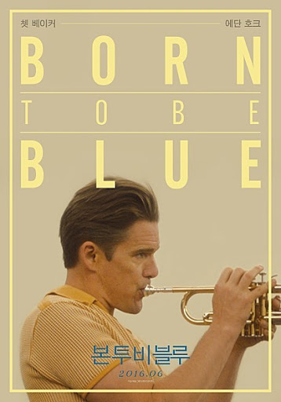

D+7
내가 좋아하는 것들
드라마,영화, 만화보기
너무 재밌게 봤었다.

친구들
집에 있기
뭔가 배우기
-요즘은 우쿨렐레랑 노래 코딩을 배우고 있다. 정말 재밌다!
공연 보러 다니기
-요즘은 코로나 때문에 많이 다니지는 못하고 돈도 없다!
책 읽기
-작가 한강님의 책도 매우 좋아하고 단테의 신곡도 좋아하는데 좀 더 밝고 재밌는 책도 찾아서 읽어야 할 것 같다.
맛있는거 먹기(땡길 때)
-항상 어떤 음식이 땡기는 편이 아니여서 뭔가 음식이 땡길때 그 음식을 먹는 기분이란 정말 황홀하다.
식물 키우기
-식물 키우는거 좋아한다. 열매가 열리는 식물이라면 더 즐겁다.
조승우
-사랑합니다!
페퍼톤스
-언제나 당신들 덕분에 나는 청춘일거예요.
김혜수
-아름다우십니다.
하고 싶은거 해봤을 때
-지금 노래배우는 거랑 코딩이랑! 우쿨렐레도!